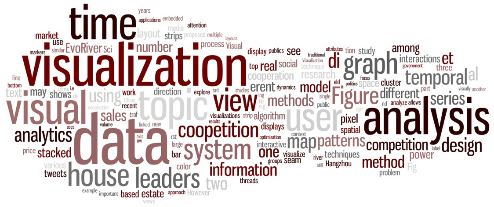
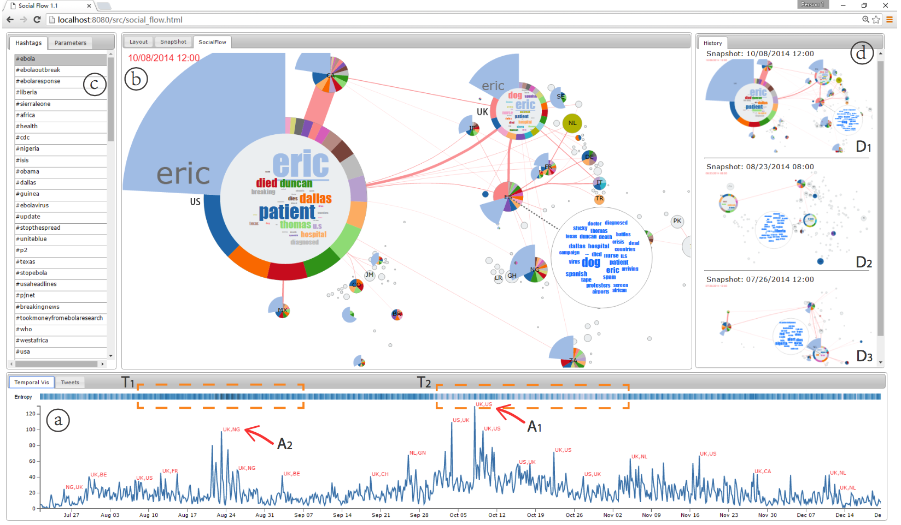
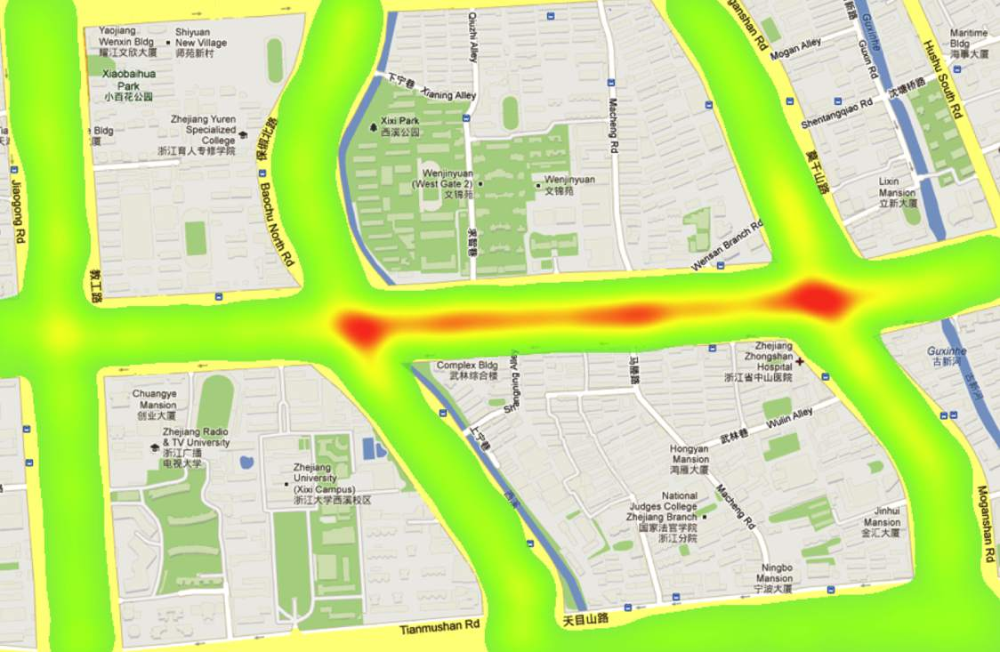
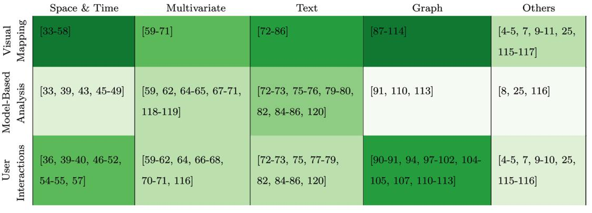
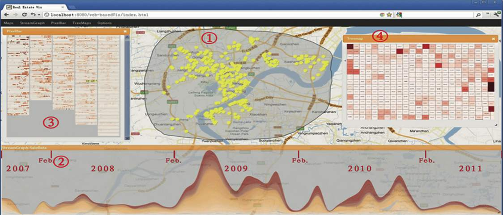
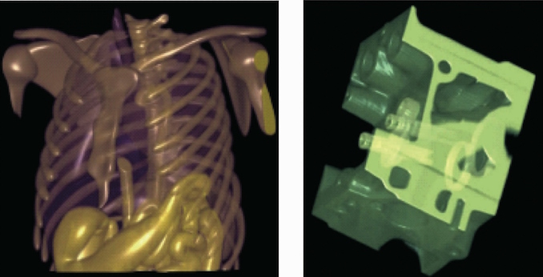

Guodao Sun（孙国道） godoor.sun [at] gmail.com

Bio:
I'm currently an assistant professor at College of Information
Engineering, Zhejiang
University of Technology, Hangzhou, China.
I received B.Sc. in computer science and technology (2010), and Ph.D. degree in January, 2016 under the supervision of Ronghua Liang.
During my Ph.D study, I studied and worked as a visiting
intern at Department of Computer Science and Engineering,
Hong Kong University of Science and
Technology under Prof. Huamin Qu's supervision from February 2013 to
July 2013, a research intern at Internet Graphics Group,
Microsoft
Research Asia with Yingcai Wu from July 2013 to January 2015,
and a visiting intern at The Institute for Visualization and Interactive Systems (VIS) headed by Thomas Ertl at the University of Stuttgart from July 2015 to December 2015.
Research Interest:
At present, I'm interested in exploring large data using interactive visual analytics with focus on:
- Visual Analysis of Urban Data (vehicles, human movement, environment etc.)
- Visual Analysis of Social Data (social media, social network etc.)
Selected Publications:
|  |
ACM Transactions on Intelligent Systems and Technology, to appear, 2017
|
 |
IEEE Transactions on Visualization and Computer Graphics, 23(5):1506-1519, 2017
|
 |
IEEE Transactions on Multimedia, 18(11):2271-2281, 2016
|
 |
IEEE Pacific Visualization Symposium, 2016, to appear.
|
 |
IEEE Transactions on Visualization and Computer Graphics, 20(12):1753-1762, 2014
|
|  |
IEEE Pacific Visualization Symposium, pages 185-192, 2014
|
|  |
Journal of Computer Science and Technology,
28(5):852-867, 2013
|
|  |
SCIENCE CHINA Information Sciences, 56(5):1-13,
2013
|
|  |
Journal of Computer Aided Design＆ Computer
Graphics, 25(11):1606-1613, 2013
|
Professional Activities:
- Program Committee for PacificVis 2017, VINCI'14, VINCI'15, and ChinaVis
- Reviewers for various journals (e.g. IEEE TVCG, ACM TiiS, JVLC) and conferences (e.g., IEEE Vis, IEEE PacificVis, VINCI, ChinaVIS).